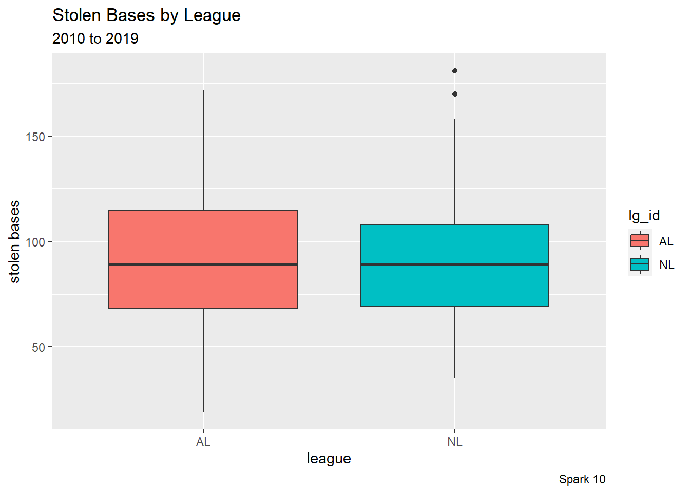
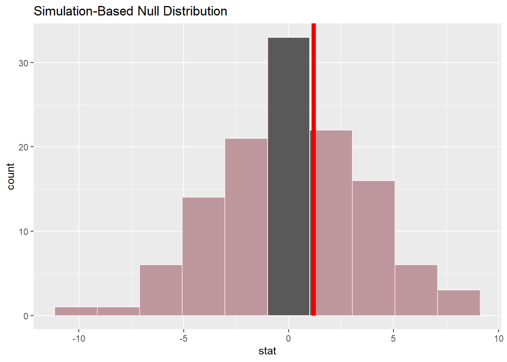
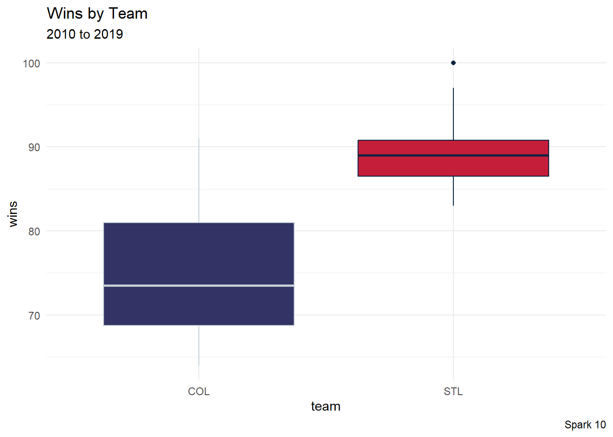
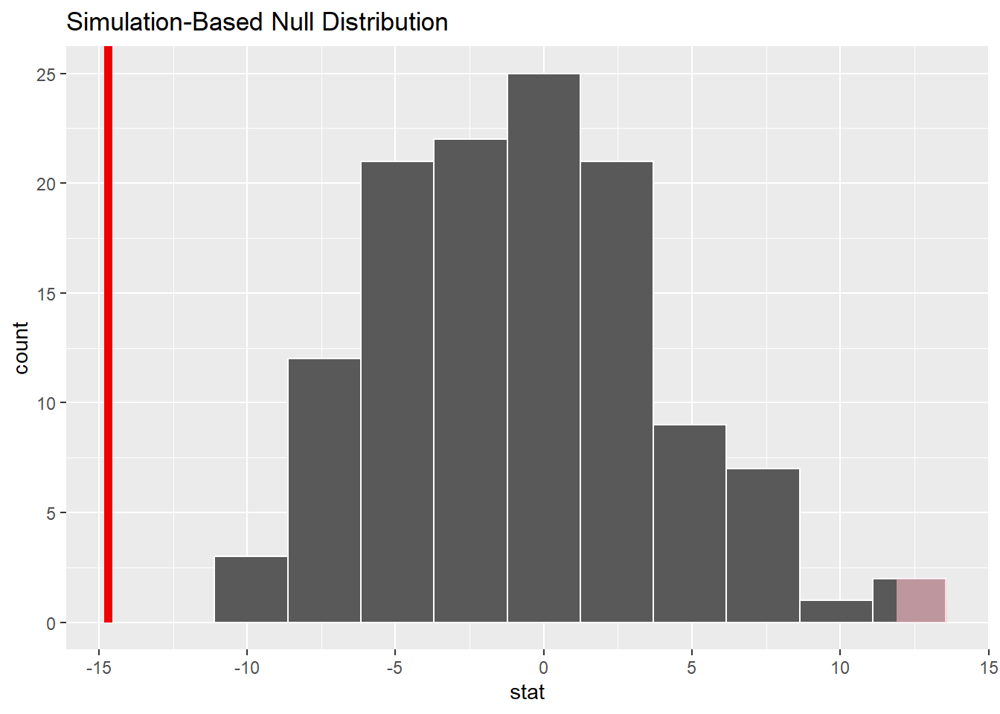

library("infer")
library("moderndive")
library("patchwork") #easy graph layouts
library("tidyverse")Source: Statistical Inference via Data Science: A Modern Dive into R and the Tidyverse
- Chapter 9: Hypothesis Testing
- https://moderndive.com/9-hypothesis-testing.html
Load the Data
Since we have CSV files (comma-separated values), the read_csv() command in the readr package will be convenient here. I tend to save data set into a variable df (stands for “data frame”).
Today’s data set comes from the Lahman package, which contains a lot of historical data about Major League Baseball. For interest, this is a subset of the data from the 2010 to 2019 seasons.
# library("Lahman")
# df <- Teams |>
# filter(yearID >= 2010) |>
# filter(yearID < 2020)
#
# readr::write_csv(df, "baseball_2010_2019.csv")df <- readr::read_csv("baseball_2010_2019.csv") |>
janitor::clean_names()Rows: 300 Columns: 48
── Column specification ────────────────────────────────────────────────────────
Delimiter: ","
chr (13): lgID, teamID, franchID, divID, DivWin, WCWin, LgWin, WSWin, name, ...
dbl (35): yearID, Rank, G, Ghome, W, L, R, AB, H, X2B, X3B, HR, BB, SO, SB, ...
ℹ Use `spec()` to retrieve the full column specification for this data.
ℹ Specify the column types or set `show_col_types = FALSE` to quiet this message.Look at the Data
One way to get a quick look at the data set is with the head() command (outputs the first few rows and columns).
head(df)# A tibble: 6 × 48
year_id lg_id team_id franch_id div_id rank g ghome w l div_win
<dbl> <chr> <chr> <chr> <chr> <dbl> <dbl> <dbl> <dbl> <dbl> <chr>
1 2010 NL ARI ARI W 5 162 81 65 97 N
2 2010 NL ATL ATL E 2 162 81 91 71 N
3 2010 AL BAL BAL E 5 162 81 66 96 N
4 2010 AL BOS BOS E 3 162 81 89 73 N
5 2010 AL CHA CHW C 2 162 81 88 74 N
6 2010 NL CHN CHC C 5 162 81 75 87 N
# ℹ 37 more variables: wc_win <chr>, lg_win <chr>, ws_win <chr>, r <dbl>,
# ab <dbl>, h <dbl>, x2b <dbl>, x3b <dbl>, hr <dbl>, bb <dbl>, so <dbl>,
# sb <dbl>, cs <dbl>, hbp <dbl>, sf <dbl>, ra <dbl>, er <dbl>, era <dbl>,
# cg <dbl>, sho <dbl>, sv <dbl>, i_pouts <dbl>, ha <dbl>, hra <dbl>,
# bba <dbl>, soa <dbl>, e <dbl>, dp <dbl>, fp <dbl>, name <chr>, park <chr>,
# attendance <dbl>, bpf <dbl>, ppf <dbl>, team_idbr <chr>,
# team_i_dlahman45 <chr>, team_i_dretro <chr>We can also look at the structure of a data frame with the str() command. In particular, this view allows us to quickly see which variables are numerical and which are categorical.
str(df, give.attr = FALSE)spc_tbl_ [300 × 48] (S3: spec_tbl_df/tbl_df/tbl/data.frame)
$ year_id : num [1:300] 2010 2010 2010 2010 2010 2010 2010 2010 2010 2010 ...
$ lg_id : chr [1:300] "NL" "NL" "AL" "AL" ...
$ team_id : chr [1:300] "ARI" "ATL" "BAL" "BOS" ...
$ franch_id : chr [1:300] "ARI" "ATL" "BAL" "BOS" ...
$ div_id : chr [1:300] "W" "E" "E" "E" ...
$ rank : num [1:300] 5 2 5 3 2 5 1 4 3 3 ...
$ g : num [1:300] 162 162 162 162 162 162 162 162 162 162 ...
$ ghome : num [1:300] 81 81 81 81 81 81 81 81 81 81 ...
$ w : num [1:300] 65 91 66 89 88 75 91 69 83 81 ...
$ l : num [1:300] 97 71 96 73 74 87 71 93 79 81 ...
$ div_win : chr [1:300] "N" "N" "N" "N" ...
$ wc_win : chr [1:300] "N" "Y" "N" "N" ...
$ lg_win : chr [1:300] "N" "N" "N" "N" ...
$ ws_win : chr [1:300] "N" "N" "N" "N" ...
$ r : num [1:300] 713 738 613 818 752 685 790 646 770 751 ...
$ ab : num [1:300] 5473 5463 5554 5646 5484 ...
$ h : num [1:300] 1366 1411 1440 1511 1467 ...
$ x2b : num [1:300] 301 312 264 358 263 298 293 290 270 308 ...
$ x3b : num [1:300] 34 25 21 22 21 27 30 20 54 32 ...
$ hr : num [1:300] 180 139 133 211 177 149 188 128 173 152 ...
$ bb : num [1:300] 589 634 424 587 467 479 522 545 585 546 ...
$ so : num [1:300] 1529 1140 1056 1140 922 ...
$ sb : num [1:300] 86 63 76 68 160 55 93 91 99 69 ...
$ cs : num [1:300] 41 29 34 17 74 31 43 33 42 30 ...
$ hbp : num [1:300] 39 51 54 47 79 50 68 64 47 41 ...
$ sf : num [1:300] 41 35 45 46 38 38 50 33 47 41 ...
$ ra : num [1:300] 836 629 785 744 704 767 685 752 717 743 ...
$ er : num [1:300] 765 569 733 679 658 668 648 684 663 690 ...
$ era : num [1:300] 4.81 3.56 4.59 4.2 4.09 4.18 4.01 4.3 4.14 4.3 ...
$ cg : num [1:300] 3 2 3 3 6 1 4 10 6 6 ...
$ sho : num [1:300] 3 9 7 9 11 14 9 4 12 5 ...
$ sv : num [1:300] 35 41 35 44 43 40 43 34 35 32 ...
$ i_pouts : num [1:300] 4296 4318 4309 4370 4339 ...
$ ha : num [1:300] 1503 1326 1508 1402 1471 ...
$ hra : num [1:300] 210 126 186 152 136 154 158 147 139 142 ...
$ bba : num [1:300] 548 505 520 580 490 605 524 572 525 537 ...
$ soa : num [1:300] 1070 1241 1007 1207 1149 ...
$ e : num [1:300] 102 126 105 111 103 126 72 110 101 109 ...
$ dp : num [1:300] 152 166 141 132 158 137 142 179 182 171 ...
$ fp : num [1:300] 0.983 0.98 0.982 0.982 0.983 0.979 0.988 0.982 0.984 0.982 ...
$ name : chr [1:300] "Arizona Diamondbacks" "Atlanta Braves" "Baltimore Orioles" "Boston Red Sox" ...
$ park : chr [1:300] "Chase Field" "Turner Field" "Oriole Park at Camden Yards" "Fenway Park II" ...
$ attendance : num [1:300] 2056941 2510119 1733018 3046443 2194378 ...
$ bpf : num [1:300] 104 98 101 106 105 108 99 93 115 101 ...
$ ppf : num [1:300] 105 97 102 105 105 108 99 93 115 101 ...
$ team_idbr : chr [1:300] "ARI" "ATL" "BAL" "BOS" ...
$ team_i_dlahman45: chr [1:300] "ARI" "ATL" "BAL" "BOS" ...
$ team_i_dretro : chr [1:300] "ARI" "ATL" "BAL" "BOS" ...Another convenient tool for our programming purposes is looking at the column names (i.e. variable names that we need to type later)
colnames(df) [1] "year_id" "lg_id" "team_id" "franch_id"
[5] "div_id" "rank" "g" "ghome"
[9] "w" "l" "div_win" "wc_win"
[13] "lg_win" "ws_win" "r" "ab"
[17] "h" "x2b" "x3b" "hr"
[21] "bb" "so" "sb" "cs"
[25] "hbp" "sf" "ra" "er"
[29] "era" "cg" "sho" "sv"
[33] "i_pouts" "ha" "hra" "bba"
[37] "soa" "e" "dp" "fp"
[41] "name" "park" "attendance" "bpf"
[45] "ppf" "team_idbr" "team_i_dlahman45" "team_i_dretro" Example
Example 1
explanatory variable (x, categorical):
lg_idresponse variable (y, numerical):
sbnull hypothesis: Both the National and American Leagues had the same average number of stolen bases.
alternative hypothesis: The National and American Leagues had a different average number of stolen bases.
We can use the table command to get a quick list of the labels within a categorical variable.
# tally
table(df$lg_id)
AL NL
147 153 We should use a side-by-side boxplot visualization to get a sense of two quantities.
# boxplot
df %>%
filter(lg_id == "NL" | lg_id == "AL") %>% #use only two labels
ggplot(aes(x = lg_id, y = sb)) + #x-axis: categorical, y-axis: numerical
geom_boxplot(aes(fill = lg_id)) +
labs(title = "Stolen Bases by League",
subtitle = "2010 to 2019",
caption = "Spark 10",
x = "league",
y = "stolen bases")
Next, we compute the observed difference in means.
# compute observed difference in means
obs_diff_means <- df %>%
filter(lg_id == "NL" | lg_id == "AL") %>% #use only two labels
specify(formula = sb ~ lg_id) %>% #response_var ~ explanatory_var
calculate(stat = "diff in means", order = c("AL", "NL"))
# print
obs_diff_meansResponse: sb (numeric)
Explanatory: lg_id (factor)
# A tibble: 1 × 1
stat
<dbl>
1 1.19Now, we use the infer package to create null distribution from the null hypothesis.
# build a null distribution
null_distribution <- df %>%
filter(lg_id == "NL" | lg_id == "AL") %>%
specify(formula = sb ~ lg_id) %>%
hypothesize(null = "independence") %>%
generate(reps = 123, type = "permute") %>%
calculate(stat = "diff in means", order = c("AL", "NL"))# visualize the p-value
visualize(null_distribution, bins = 10) +
shade_p_value(obs_stat = obs_diff_means, direction = "two_sided")
# get p-value
null_distribution %>%
get_p_value(obs_stat = obs_diff_means, direction = "two_sided")# A tibble: 1 × 1
p_value
<dbl>
1 0.732Since the p-value is greater than 0.05, we fail to reject the claim that the two leagues had the same average number of stolen bases.
Example 2
explanatory variable (x, categorical):
franch_idresponse variable (y, numerical):
wnull hypothesis: Both the Giants and the Padres had the same average number of wins.
alternative hypothesis: The Giants and the Padres had a different average number of wins.
We can use the table command to get a quick list of the labels within a categorical variable.
# tally
table(df$franch_id)
ANA ARI ATL BAL BOS CHC CHW CIN CLE COL DET FLA HOU KCR LAD MIL MIN NYM NYY OAK
10 10 10 10 10 10 10 10 10 10 10 10 10 10 10 10 10 10 10 10
PHI PIT SDP SEA SFG STL TBD TEX TOR WSN
10 10 10 10 10 10 10 10 10 10 We should use a side-by-side boxplot visualization to get a sense of two quantities.
# boxplot
df %>%
filter(franch_id == "COL" | franch_id == "STL") %>% #use only two labels
ggplot(aes(x = franch_id, y = w)) + #x-axis: categorical, y-axis: numerical
geom_boxplot(aes(color = franch_id, fill = franch_id)) +
labs(title = "Wins by Team",
subtitle = "2010 to 2019",
caption = "Spark 10",
x = "team",
y = "wins") +
scale_color_manual(values = c("#C4CED4", "#0C2340")) +
scale_fill_manual(values = c("#333366", "#C41E3A")) +
theme_minimal() +
theme(legend.position = "none")
Next, we compute the observed difference in means.
# compute observed difference in means
obs_diff_means <- df %>%
filter(franch_id == "COL" | franch_id == "STL") %>% #use only two labels
specify(formula = w ~ franch_id) %>% #response_var ~ explanatory_var
calculate(stat = "diff in means", order = c("COL", "STL"))
# print
obs_diff_meansResponse: w (numeric)
Explanatory: franch_id (factor)
# A tibble: 1 × 1
stat
<dbl>
1 -14.7Now, we use the infer package to create null distribution from the null hypothesis.
# build a null distribution
null_distribution <- df %>%
filter(franch_id == "COL" | franch_id == "STL") %>% #use only two labels
specify(formula = w ~ franch_id) %>% #response_var ~ explanatory_var
hypothesize(null = "independence") %>%
generate(reps = 123, type = "permute") %>%
calculate(stat = "diff in means", order = c("COL", "STL"))# visualize the p-value
visualize(null_distribution, bins = 10) +
shade_p_value(obs_stat = obs_diff_means, direction = "two_sided")
# get p-value
null_distribution %>%
get_p_value(obs_stat = obs_diff_means, direction = "two_sided")Warning: Please be cautious in reporting a p-value of 0. This result is an
approximation based on the number of `reps` chosen in the `generate()` step.
See `?get_p_value()` for more information.# A tibble: 1 × 1
p_value
<dbl>
1 0Since the p-value is less than 0.05, we reject the claim that the two teams had the same average number of wins.
Exercises
Explore the Data
Load your data set (for your sport) using the read_csv command and save the data frame as df.
Use the head, str, and colnames commands to look at your data set.
Today, you are asked to carry out two hypothesis tests, display visualizations, and describe the results.
Group Exercise 1
Come up with a hypothesis test and describe it here
- explanatory variable (x, categorical):
- response variable (y, numerical):
- null hypothesis:
- alternative hypothesis:
Use the table function on the categorical variable to tally its contents.
Make a side-by-side boxplot visualization to get a sense of two quantities.
Use the infer package to create null distribution from the null hypothesis.
Use the visualize function to view the null distribution along with a shaded overlay to display the p-value.
Describe the results of your hypothesis test in a complete sentence.
Group Exercise 2
Come up with another hypothesis test and describe it here
- explanatory variable (x, categorical):
- response variable (y, numerical):
- null hypothesis:
- alternative hypothesis:
Use the table function on the categorical variable to tally its contents.
Make a side-by-side boxplot visualization to get a sense of two quantities.
Use the infer package to create null distribution from the null hypothesis.
Use the visualize function to view the null distribution along with a shaded overlay to display the p-value.
Describe the results of your hypothesis test in a complete sentence.
Wrap Up
- Click
Renderto create the HTML file - Check the checkbox next to the HTML file (in the Files pane)
- Click the gear (“More”), and then click “Export”
- Upload the HTML file back into our CatCourses space